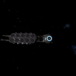
A Secret to be Uncovered. A Trail to be Followed. - On the 28th August 3311, a social media message was transmitted stating: "A secret to be uncovered. A trail to be followed.", along with a short video clip. Alcatraz Class Prison Ship JJF-048 - The Alcatraz Class Prison Ship designation JJF-048 was last reported in orbit of the planet HIP 17692 A 3. The ship is heavily damaged, destroyed by weapons consistent with other Thargoid attacks, leaving green hull scarring and some kind of green gas throughout the area. A Ship Log Uplink point can be located on the hull....
Alcatraz Class Prison Ship JJF-048 - The Alcatraz Class Prison Ship designation JJF-048 was last reported in orbit of the planet HIP 17692 A 3. The ship is heavily damaged, destroyed by weapons consistent with other Thargoid attacks, leaving green hull scarring and some kind of green gas throughout the area. A Ship Log Uplink point can be located on the hull.... Alcatraz Class Prison Ship SSC-852 - The Alcatraz Class Prison Ship designation SSC-852 is expected to be in the following system, based on the last reported flight operations plan: A number of Engineer Materials are scattered nearby, and a number of ships are in the area. A Ship Log Uplink point can be located on the hull. Deploy your ship’s hardpoints...
Alcatraz Class Prison Ship SSC-852 - The Alcatraz Class Prison Ship designation SSC-852 is expected to be in the following system, based on the last reported flight operations plan: A number of Engineer Materials are scattered nearby, and a number of ships are in the area. A Ship Log Uplink point can be located on the hull. Deploy your ship’s hardpoints... Aquarius-class Tanker ALF-895 - The Aquarius Class Tanker designation ALF-895 was last reported in orbit of the planet HIP 17225 A 2. The ship is heavily damaged, destroyed by weapons consistent with other Thargoid attacks, leaving green hull scarring and some kind of green gas throughout the area. A Ship Log Uplink point can be located on the hull. Deploy...
Aquarius-class Tanker ALF-895 - The Aquarius Class Tanker designation ALF-895 was last reported in orbit of the planet HIP 17225 A 2. The ship is heavily damaged, destroyed by weapons consistent with other Thargoid attacks, leaving green hull scarring and some kind of green gas throughout the area. A Ship Log Uplink point can be located on the hull. Deploy... Aquarius-class Tanker KGD-684 - The Aquarius Class Tanker designation KGD-684 is expected to be in the following system, based on the last reported flight operations plan: A number of Engineer Materials are scattered nearby, and a number of ships are in the area. A Ship Log Uplink point can be located on the hull. Deploy your ship’s hardpoints and...
Aquarius-class Tanker KGD-684 - The Aquarius Class Tanker designation KGD-684 is expected to be in the following system, based on the last reported flight operations plan: A number of Engineer Materials are scattered nearby, and a number of ships are in the area. A Ship Log Uplink point can be located on the hull. Deploy your ship’s hardpoints and... Aquarius-class Tanker WKS-559 - A Aquarius Class Tanker, designation WKS-559, has been attacked by pirates and can be found in the California Sector BA-A e6 system, orbiting body 4.
Aquarius-class Tanker WKS-559 - A Aquarius Class Tanker, designation WKS-559, has been attacked by pirates and can be found in the California Sector BA-A e6 system, orbiting body 4. Banner Class Bulk Cargo Ship BTG-237 - The Banner Class Bulk Cargo Ship BTG-237 was last reported in orbit of the moon Pleiades Sector IR-W d1-55 5 a. The ship is heavily damaged, destroyed by weapons consistent with other Thargoid attacks, leaving green hull scarring and some kind of green gas throughout the area. A Ship Log Uplink point can be located in...
Banner Class Bulk Cargo Ship BTG-237 - The Banner Class Bulk Cargo Ship BTG-237 was last reported in orbit of the moon Pleiades Sector IR-W d1-55 5 a. The ship is heavily damaged, destroyed by weapons consistent with other Thargoid attacks, leaving green hull scarring and some kind of green gas throughout the area. A Ship Log Uplink point can be located in... Banner Class Bulk Cargo Ship TIH-562 - The Banner Class Bulk Cargo Ship designation TIH-562 is expected to be in the following system, based on the last reported flight operations plan: A number of Engineer Materials are scattered nearby, and a number of ships are in the area. A Ship Log Uplink point can be located on the hull. Deploy your ship’s...
Banner Class Bulk Cargo Ship TIH-562 - The Banner Class Bulk Cargo Ship designation TIH-562 is expected to be in the following system, based on the last reported flight operations plan: A number of Engineer Materials are scattered nearby, and a number of ships are in the area. A Ship Log Uplink point can be located on the hull. Deploy your ship’s... Bellmarsh Class Prison Ship DLV-812 - The Bellmarsh Class Prison Ship designation DLV-812 is expected to be in the following system, based on the last reported flight operations plan: A number of Engineer Materials are scattered nearby, and a number of ships are in the area. A Ship Log Uplink point can be located on the hull. Deploy your ship’s hardpoints...
Bellmarsh Class Prison Ship DLV-812 - The Bellmarsh Class Prison Ship designation DLV-812 is expected to be in the following system, based on the last reported flight operations plan: A number of Engineer Materials are scattered nearby, and a number of ships are in the area. A Ship Log Uplink point can be located on the hull. Deploy your ship’s hardpoints... Bowman Class Science Vessel ZZW-101 - The Bowman Class Science Vessel designation ZZW-101 is expected to be in the following system, based on the last reported flight operations plan: A number of Engineer Materials are scattered nearby, and a number of ships are in the area. A Ship Log Uplink point can be located on the hull. Deploy your ship’s hardpoints...
Bowman Class Science Vessel ZZW-101 - The Bowman Class Science Vessel designation ZZW-101 is expected to be in the following system, based on the last reported flight operations plan: A number of Engineer Materials are scattered nearby, and a number of ships are in the area. A Ship Log Uplink point can be located on the hull. Deploy your ship’s hardpoints... Cargo Vessel Ford Prefect - The Cargo Vessel Ford Prefect, a Banner Class Bulk Cargo Ship, can be found in orbit of the planet Birmingham in the Gurney Slade system. There are Engineer Materials scattered nearby.
Cargo Vessel Ford Prefect - The Cargo Vessel Ford Prefect, a Banner Class Bulk Cargo Ship, can be found in orbit of the planet Birmingham in the Gurney Slade system. There are Engineer Materials scattered nearby. Cave Johnson Memorial Science Lab - The Cave Johnson Memorial Science Lab, is a Lowell Class Science Vessel. A number of Engineer Materials are scattered nearby, and a number of ships are in the area. A Ship Log Uplink point can be located on the hull. Deploy your ship’s hardpoints and use the onboard Data Link Scanner within 200m of the...
Cave Johnson Memorial Science Lab - The Cave Johnson Memorial Science Lab, is a Lowell Class Science Vessel. A number of Engineer Materials are scattered nearby, and a number of ships are in the area. A Ship Log Uplink point can be located on the hull. Deploy your ship’s hardpoints and use the onboard Data Link Scanner within 200m of the...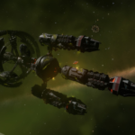
Dedicant - A Galnet article titled “The Hunt for the Dedicant” was posted on 20 July 3309 that pointed to a distress call from the Dedicant megaship detected in the LP 714-58 system. Visiting LP 714-58 one can find a Listening Post “Partial Distress Call 1/4” near body 2a. You will need to fly within 1000Ls of... Demeter Class Agricultural Vessel DGL-436 - The Demeter Class Agricultural Vessel designation DGL-436 is expected to be in the following system, based on the last reported flight operations plan: A number of Engineer Materials are scattered nearby, and a number of ships are in the area. A Ship Log Uplink point can be located on the hull. Deploy your ship’s hardpoints...
Demeter Class Agricultural Vessel DGL-436 - The Demeter Class Agricultural Vessel designation DGL-436 is expected to be in the following system, based on the last reported flight operations plan: A number of Engineer Materials are scattered nearby, and a number of ships are in the area. A Ship Log Uplink point can be located on the hull. Deploy your ship’s hardpoints... Demeter Class Agricultural Vessel KSL-878 - The Demeter Class Agricultural Vessel designation KSL-878 was last reported in orbit of the planet Pleiades Sector HR-W d1-57 A 5. The ship is heavily damaged, destroyed by weapons consistent with other Thargoid attacks, leaving green hull scarring and some kind of green gas throughout the area. A Ship Log Uplink point can be located on...
Demeter Class Agricultural Vessel KSL-878 - The Demeter Class Agricultural Vessel designation KSL-878 was last reported in orbit of the planet Pleiades Sector HR-W d1-57 A 5. The ship is heavily damaged, destroyed by weapons consistent with other Thargoid attacks, leaving green hull scarring and some kind of green gas throughout the area. A Ship Log Uplink point can be located on... Dionysus Class Agricultural Vessel AIE Anzac Honour - Dionysus Class Agricultural Vessel AIE Anzac Honour is a megaship orbiting Pleiades Sector GW-W c1-15 11 which appears to have been added as a result of a Community Goal for Angeli Imperial Enterprises announced in galnet on 15 DEC 3303. There are materials floating around the area, and many security vessels which will scan you....
Dionysus Class Agricultural Vessel AIE Anzac Honour - Dionysus Class Agricultural Vessel AIE Anzac Honour is a megaship orbiting Pleiades Sector GW-W c1-15 11 which appears to have been added as a result of a Community Goal for Angeli Imperial Enterprises announced in galnet on 15 DEC 3303. There are materials floating around the area, and many security vessels which will scan you.... Dionysus Class Agricultural Vessel DSL-327 - The Dionysus Class Agricultural Vessel designation DSL-327 is expected to be in the following system, based on the last reported flight operations plan: A number of Engineer Materials are scattered nearby, and a number of ships are in the area. A Ship Log Uplink point can be located on the hull. Deploy your ship’s hardpoints...
Dionysus Class Agricultural Vessel DSL-327 - The Dionysus Class Agricultural Vessel designation DSL-327 is expected to be in the following system, based on the last reported flight operations plan: A number of Engineer Materials are scattered nearby, and a number of ships are in the area. A Ship Log Uplink point can be located on the hull. Deploy your ship’s hardpoints...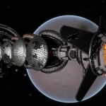
Dionysus Class Agricultural Vessel FGK-342 - A Dionysus Class Agricultural Vessel, designation FKG-342, has been attacked by pirates and can be found in the Synuefai LX-R d5-28 system, orbiting body 4.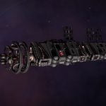
Dove Enigma - Dove Enigma is a dockable megaship in Colonia around 3 a, added to Colonia as part of the Enigma Expedition.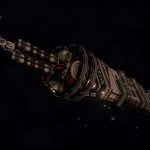
Fisher’s Rest - The Flight Operations Megaship “Fisher’s Rest” was last reported in the Aldebaran system, around the primary star. Fisher’s Rest is named for the actress Carrie Fisher.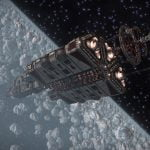
Foster Terminal - The Flight Operations Megaship “Foster Terminal” was last reported in orbit of the planet Coeus A 2. GCS Sarasvati - GCS Sarasvati is a megaship abandoned in orbit of Sheron (previously IC 4604 Sector FB-X c1-16) A 1 a. The location is revealed by the listening post in orbit of Jotunheim 7 a: …PRIORITY MESSAGE… …Communication Source Identified: Gail… …Designation: Project Thunderchild Unit 01… Signal Match Detected Distance to Signal 591.10Ly. I’ve detected a encoded...
 Ghost Ship Adamastor - The Adamastor, a Lowell class science megaship, can be found orbiting Chukchan 5 b. It is on fire and there are cargo and engineering materials nearby. Scanning the ship with the Datalink scanner reveals the usual array of subtargets, including a data point that gives more information about the ship. There is also a local...
Ghost Ship Adamastor - The Adamastor, a Lowell class science megaship, can be found orbiting Chukchan 5 b. It is on fire and there are cargo and engineering materials nearby. Scanning the ship with the Datalink scanner reveals the usual array of subtargets, including a data point that gives more information about the ship. There is also a local... Gordon Class Bulk Cargo Ship FPR-42 - A Gordon Class Bulk Cargo Ship, designation FPR-42, has been attacked by pirates and can be found in the HIP 18077 system, orbiting body 6 c.
Gordon Class Bulk Cargo Ship FPR-42 - A Gordon Class Bulk Cargo Ship, designation FPR-42, has been attacked by pirates and can be found in the HIP 18077 system, orbiting body 6 c. Gordon Class Bulk Cargo Ship MSZ-405 - The Gordon Class Bulk Cargo Ship designation MSZ-405 is expected to be in the following system, based on the last reported flight operations plan: A number of Engineer Materials are scattered nearby, and a number of ships are in the area. A Ship Log Uplink point can be located on the hull. Deploy your ship’s...
Gordon Class Bulk Cargo Ship MSZ-405 - The Gordon Class Bulk Cargo Ship designation MSZ-405 is expected to be in the following system, based on the last reported flight operations plan: A number of Engineer Materials are scattered nearby, and a number of ships are in the area. A Ship Log Uplink point can be located on the hull. Deploy your ship’s... Henry Class Bulk Cargo Ship ALC-339 - The Henry Class Bulk Cargo Ship designation ALC-339 is expected to be in the following system, based on the last reported flight operations plan: A number of Engineer Materials are scattered nearby, and a number of ships are in the area. A Ship Log Uplink point can be located on the hull. Deploy your ship’s...
Henry Class Bulk Cargo Ship ALC-339 - The Henry Class Bulk Cargo Ship designation ALC-339 is expected to be in the following system, based on the last reported flight operations plan: A number of Engineer Materials are scattered nearby, and a number of ships are in the area. A Ship Log Uplink point can be located on the hull. Deploy your ship’s... Henry Class Bulk Cargo Ship AR-005 - A Henry Class Bulk Cargo Ship designation AR-005 can be found at Pleiades Sector IR-W d1-55 4 a. It has been attacked, the damage looks to be from Thargoids. Many of the cargo units have become detached from the main ship. There is cargo around the ship. There is a Ship Log Uplink which reads:...
Henry Class Bulk Cargo Ship AR-005 - A Henry Class Bulk Cargo Ship designation AR-005 can be found at Pleiades Sector IR-W d1-55 4 a. It has been attacked, the damage looks to be from Thargoids. Many of the cargo units have become detached from the main ship. There is cargo around the ship. There is a Ship Log Uplink which reads:... Hercules Class Bulk Cargo Ship TFD-013 - The Hercules Class Bulk Cargo Ship designation TFD-013 is expected to be in the following system, based on the last reported flight operations plan: A number of Engineer Materials are scattered nearby, and a number of ships are in the area. A Ship Log Uplink point can be located on the hull of the central...
Hercules Class Bulk Cargo Ship TFD-013 - The Hercules Class Bulk Cargo Ship designation TFD-013 is expected to be in the following system, based on the last reported flight operations plan: A number of Engineer Materials are scattered nearby, and a number of ships are in the area. A Ship Log Uplink point can be located on the hull of the central... Hesperus - The Hesperus is a Lowell class megaship that can be found in the Perseus Dark Region KC-V c2-2 system, orbiting body B (A Belt - Cluster 1).
Hesperus - The Hesperus is a Lowell class megaship that can be found in the Perseus Dark Region KC-V c2-2 system, orbiting body B (A Belt - Cluster 1). Hogan Class Bulk Cargo Ship DAL-658 - The Hogan Class Bulk Cargo Ship designation DAL-658 is expected to be in the following system, based on the last reported flight operations plan: A number of Engineer Materials are scattered nearby, and a number of ships are in the area. A Ship Log Uplink point can be located on the hull. Deploy your ship’s...
Hogan Class Bulk Cargo Ship DAL-658 - The Hogan Class Bulk Cargo Ship designation DAL-658 is expected to be in the following system, based on the last reported flight operations plan: A number of Engineer Materials are scattered nearby, and a number of ships are in the area. A Ship Log Uplink point can be located on the hull. Deploy your ship’s... Hogan Class Bulk Cargo Ship PTK-179 - The Hogan Class Bulk Cargo ship designation PTK-179 can be found in the Electra system orbiting body 6. The ship has been attacked and shows signs of Thargoid damage. A number of Engineer Materials / Cargo are scattered nearby, and a number of ships are in the area. Normally there will either be a fleet...
Hogan Class Bulk Cargo Ship PTK-179 - The Hogan Class Bulk Cargo ship designation PTK-179 can be found in the Electra system orbiting body 6. The ship has been attacked and shows signs of Thargoid damage. A number of Engineer Materials / Cargo are scattered nearby, and a number of ships are in the area. Normally there will either be a fleet... Lowell Class Science Vessel CMB-511 - The Lowell Class Science Vessel designation CMB-511 is expected to be in the following system, based on the last reported flight operations plan: A number of Engineer Materials are scattered nearby, and a number of ships are in the area. A Ship Log Uplink point can be located on the hull. Deploy your ship’s hardpoints...
Lowell Class Science Vessel CMB-511 - The Lowell Class Science Vessel designation CMB-511 is expected to be in the following system, based on the last reported flight operations plan: A number of Engineer Materials are scattered nearby, and a number of ships are in the area. A Ship Log Uplink point can be located on the hull. Deploy your ship’s hardpoints... Lowell Class Science Vessel HDR-617 - The Lowell Class Science Vessel designation HDR-617 was last reported in orbit of the planet Pleiades Sector OI-T c3-7 B 8. The ship is heavily damaged, destroyed by weapons consistent with other Thargoid attacks, leaving green hull scarring and some kind of green gas throughout the area. A Ship Log Uplink point can be located on...
Lowell Class Science Vessel HDR-617 - The Lowell Class Science Vessel designation HDR-617 was last reported in orbit of the planet Pleiades Sector OI-T c3-7 B 8. The ship is heavily damaged, destroyed by weapons consistent with other Thargoid attacks, leaving green hull scarring and some kind of green gas throughout the area. A Ship Log Uplink point can be located on... Naphtha Class Tanker FKS-981 - The Naphtha Class Tanker designation FKS-981 is expected to be in the following system, based on the last reported flight operations plan: A number of Engineer Materials are scattered nearby, and a number of ships are in the area. A Ship Log Uplink point can be located on the hull. Deploy your ship’s hardpoints and...
Naphtha Class Tanker FKS-981 - The Naphtha Class Tanker designation FKS-981 is expected to be in the following system, based on the last reported flight operations plan: A number of Engineer Materials are scattered nearby, and a number of ships are in the area. A Ship Log Uplink point can be located on the hull. Deploy your ship’s hardpoints and... Naphtha Class Tanker IPD-038 - A Naphtha Class Tanker IPD-038 can be found around Pleiades Sector IR-W d1-55 2 b. It shows signs of having being attacked by Thargoids. There are materials / cargo / escape pods in the area, and there will usually be either as medical rescue fleet or a Thargoid in the area. There is a Ship...
Naphtha Class Tanker IPD-038 - A Naphtha Class Tanker IPD-038 can be found around Pleiades Sector IR-W d1-55 2 b. It shows signs of having being attacked by Thargoids. There are materials / cargo / escape pods in the area, and there will usually be either as medical rescue fleet or a Thargoid in the area. There is a Ship... Nemb - Nemb is a Samson Class Bulk Cargo megaship that can be found in the LP 892-51 system, in orbit of body 3 a.
Nemb - Nemb is a Samson Class Bulk Cargo megaship that can be found in the LP 892-51 system, in orbit of body 3 a.  Non-Dockable Megaships. An Introduction - What classifies as a Non-Dockable Megaship? How to find Megaships? How many and which Megaships are there? Sub-targets Megaship Cargo Raids and Attacks List of Codex entries of all Non-Dockable Megaship-classes 1. What classifies as a Non-Dockable Megaship? There are many Megaships – from the Prison Ships of the Independent Detention Foundation to the Pilots...
Non-Dockable Megaships. An Introduction - What classifies as a Non-Dockable Megaship? How to find Megaships? How many and which Megaships are there? Sub-targets Megaship Cargo Raids and Attacks List of Codex entries of all Non-Dockable Megaship-classes 1. What classifies as a Non-Dockable Megaship? There are many Megaships – from the Prison Ships of the Independent Detention Foundation to the Pilots... Oath of Tyndareus - The Oath of Tyndareus is a retrofitted Hogan-class Hauler. Differently to the standard Hogan-class Hauler it has two additional Defence Turrets on the Cargo Pod Module mounted along the central axis, and one additional Turret on both Cargo Pods mounted directly against it, bringing the number of Defence Turrets to eight instead of four. Its...
Oath of Tyndareus - The Oath of Tyndareus is a retrofitted Hogan-class Hauler. Differently to the standard Hogan-class Hauler it has two additional Defence Turrets on the Cargo Pod Module mounted along the central axis, and one additional Turret on both Cargo Pods mounted directly against it, bringing the number of Defence Turrets to eight instead of four. Its...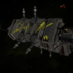
Overlook - The Overlook is a Sanchez-class megaship that has been attack by Thargoids, located in the Permit Locked HIP 22460 system, orbiting body 10 b. You can obtain the HIP 22460 permit by scanning a Listening Post in Synuefe GB-O c9-8, though it is recommended to follow the trail of Listening Posts from HIP 26176 to...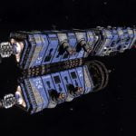
Rescue Megaships - Rescue Ships are a type of carrier megaship owned by local branches of the Pilot’s Federation to orbit damaged stations. Around the ship, search and rescue ships may be spotted. These ships are named for the station they orbit (i.e. Rescue Ship – The Oracle). Orbiting 2mm away from the stations they are assigned to,... Riker Class Prison Ship TFL-853 - The Riker Class Prison Ship designation TFL-853 is expected to be in the following system, based on the last reported flight operations plan: A number of Engineer Materials are scattered nearby, and a number of ships are in the area. A Ship Log Uplink point can be located on the hull. Deploy your ship’s hardpoints...
Riker Class Prison Ship TFL-853 - The Riker Class Prison Ship designation TFL-853 is expected to be in the following system, based on the last reported flight operations plan: A number of Engineer Materials are scattered nearby, and a number of ships are in the area. A Ship Log Uplink point can be located on the hull. Deploy your ship’s hardpoints... Sagan Class Tourist Ship TEL-121 - The Sagan Class Tourist Ship designation TEL-121 is expected to be in the following system, based on the last reported flight operations plan: A number of Engineer Materials are scattered nearby, and a number of ships are in the area. A Ship Log Uplink point can be located on the hull. Deploy your ship’s hardpoints...
Sagan Class Tourist Ship TEL-121 - The Sagan Class Tourist Ship designation TEL-121 is expected to be in the following system, based on the last reported flight operations plan: A number of Engineer Materials are scattered nearby, and a number of ships are in the area. A Ship Log Uplink point can be located on the hull. Deploy your ship’s hardpoints... Samson Class Bulk Cargo Ship AK-302 - A Samson Class Bulk Cargo Ship, designation AK-302, has been attacked by pirates and can be found in the California Sector BV-Y c7 system, orbiting body 1. Samson Class Bulk Cargo Ship ZAE-013 - The Samson Class Bulk Cargo Ship designation ZAE-013 is expected to be in the following system, based on the last reported flight operations plan: A number of Engineer Materials are scattered nearby, and a number of ships are in the area. A Ship Log Uplink point can be located on the hull. Deploy your ship’s...
Samson Class Bulk Cargo Ship AK-302 - A Samson Class Bulk Cargo Ship, designation AK-302, has been attacked by pirates and can be found in the California Sector BV-Y c7 system, orbiting body 1. Samson Class Bulk Cargo Ship ZAE-013 - The Samson Class Bulk Cargo Ship designation ZAE-013 is expected to be in the following system, based on the last reported flight operations plan: A number of Engineer Materials are scattered nearby, and a number of ships are in the area. A Ship Log Uplink point can be located on the hull. Deploy your ship’s... Samson Class Cargo Ship ALL-4659 - The Samson Class Cargo Ship designation ALL-4659 is expected to be in the following system, based on the last reported flight operations plan: A number of Engineer Materials are scattered nearby, and a number of ships are in the area. A Ship Log Uplink point can be located on the hull. Deploy your ship’s hardpoints...
Samson Class Cargo Ship ALL-4659 - The Samson Class Cargo Ship designation ALL-4659 is expected to be in the following system, based on the last reported flight operations plan: A number of Engineer Materials are scattered nearby, and a number of ships are in the area. A Ship Log Uplink point can be located on the hull. Deploy your ship’s hardpoints... Sanchez Class Science Vessel ZIG-097 - This is a Sanchez Class Science Vessel designation ZIG-097 found after being attacked at Pleiades Sector IR-W d1-55 1. There are signs typical of a Thargoid attack. There are often medical rescue flights in the area, or a Thargoid scanning the area as there are materials floating around the ship. Be aware that you will...
Sanchez Class Science Vessel ZIG-097 - This is a Sanchez Class Science Vessel designation ZIG-097 found after being attacked at Pleiades Sector IR-W d1-55 1. There are signs typical of a Thargoid attack. There are often medical rescue flights in the area, or a Thargoid scanning the area as there are materials floating around the ship. Be aware that you will... Survey Vessel Pandora - The Survey Vessel Pandora can be found in the HIP 21478 system, orbiting body A 1 f.
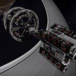
Survey Vessel Victoria’s Song - The Survey Vessel Victoria's Song can be found in the HIP 17125 system, orbiting body A 3.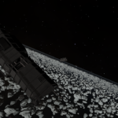
The Alexandria - The Alexandria was a megaship owned by Aegis, which can be found in the Wregoe TC-X b29-0 system, in the planetary rings of body AB 2. The Cete - An abandoned megaship named The Cete is in orbit of the planet Col 173 Sector LJ-F c12-0 A 3. A series of six Ship Log Uplink points can be located along the hull. Deploy your ships hardpoints and use the onboard Data Link Scanner within 200m of each post to scan them and retrieve the logs of the expedition...
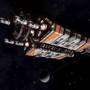
The Gnosis - The ship was constructed by an appeal to the wider community, and provides docking, repair, outfitting, and market services to all. It originally moved on a weekly schedule decided by the membership and council to conduct science throughout the galaxy, but in September 3306 the megaship retired from active science duty to instead carry out...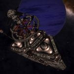
The Harmony - The Empyrean Foundation’s Flight Operations Megaship “The Harmony” was last reported in orbit of the planet Yum Kamcabi A 11. The Indra - The Flight Operations Megaship “The Indra” was last reported in HIP 27986 orbiting body 9. Previously, it has been was reported in HIP 28128 orbiting body ABC 3, and HR 1185 orbiting body A 4.
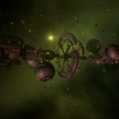
The Kingfisher - The Kingfisher is a Beckett-Class science vessel that can be found in Hyades Sector YO-Q b5-1, orbiting body B 1. The Midas - The Flight Operations Megaship “The Midas” was last reported in orbit of the planet Zeus 1.
The Zurara - An abandoned megaship named The Zurara is in orbit of the planet Syreadiae JX-F c0 1. Clues to the location of The Zurara were published on Galnet Galactic News on 17 Apr 3303 by a group known as The Hamsters. Each line of the rhyme revealed the name of a mythical figure, the first letters of which spelled...
 Thomas Class Bulk Cargo Ship DFX-056 - The Thomas Class Bulk Cargo Ship DFX-056 was last reported in orbit of the moon Pleiades Sector IH-V c2-5 1 a. The ship is heavily damaged, destroyed by weapons consistent with other Thargoid attacks, leaving green hull scarring and some kind of green gas throughout the area. A Ship Log Uplink point can be located on...
Thomas Class Bulk Cargo Ship DFX-056 - The Thomas Class Bulk Cargo Ship DFX-056 was last reported in orbit of the moon Pleiades Sector IH-V c2-5 1 a. The ship is heavily damaged, destroyed by weapons consistent with other Thargoid attacks, leaving green hull scarring and some kind of green gas throughout the area. A Ship Log Uplink point can be located on... Thomas Class Bulk Cargo Ship KS-92 - A Thomas Class Bulk Cargo Ship, designation KS-92, has been attacked by pirates and can be found in the California Sector JH-V c2-12 system, orbiting body 6.
Thomas Class Bulk Cargo Ship KS-92 - A Thomas Class Bulk Cargo Ship, designation KS-92, has been attacked by pirates and can be found in the California Sector JH-V c2-12 system, orbiting body 6. Thomas Class Bulk Cargo Ship ZKR-105 - The Thomas Class Bulk Cargo Ship designation ZKR-105 is expected to be in the following system, based on the last reported flight operations plan: A number of Engineer Materials are scattered nearby, and a number of ships are in the area. A Ship Log Uplink point can be located on the hull. Deploy your ship’s...
Thomas Class Bulk Cargo Ship ZKR-105 - The Thomas Class Bulk Cargo Ship designation ZKR-105 is expected to be in the following system, based on the last reported flight operations plan: A number of Engineer Materials are scattered nearby, and a number of ships are in the area. A Ship Log Uplink point can be located on the hull. Deploy your ship’s...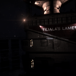
Tiliala’s Lament - Tiliala’s Lament is a Megaship introduced into the Akandinigua system around planet 5 when the Conservatives of Tiliala were displaced from their home system. The Conservatives of Tiliala were previously the permit giving faction for Tiliala, so were kept in the galaxy despite being usurped by player faction The Black Fleet. Now both factions can...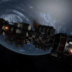
Welcome Deviation - Welcome Deviation is a megaship that can be found in the Kachirigin system, orbiting body 2.